Instruction détaillé pour configurer Active Directory sur une VM Server 2003
Pour commencez vous allez démarrer toutes vos VM qui sont déjà configuré en IP Statique (voir ancien TP)
Vous avez comme VM, deux XP et un Serveur 2003 :
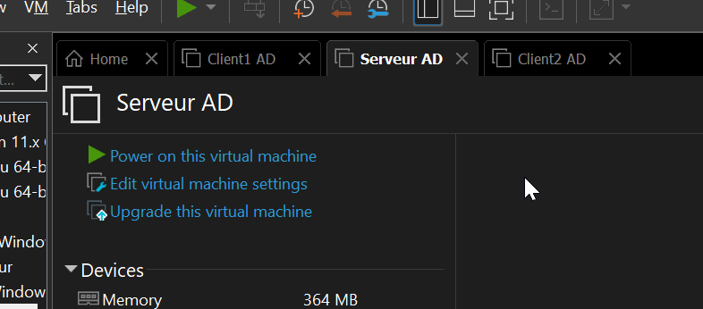
Après avoir démarrer toutes les VM, allez sur Serveur AD et ouvrez une invite de commande :
Pour ensuite taper dcpromo :
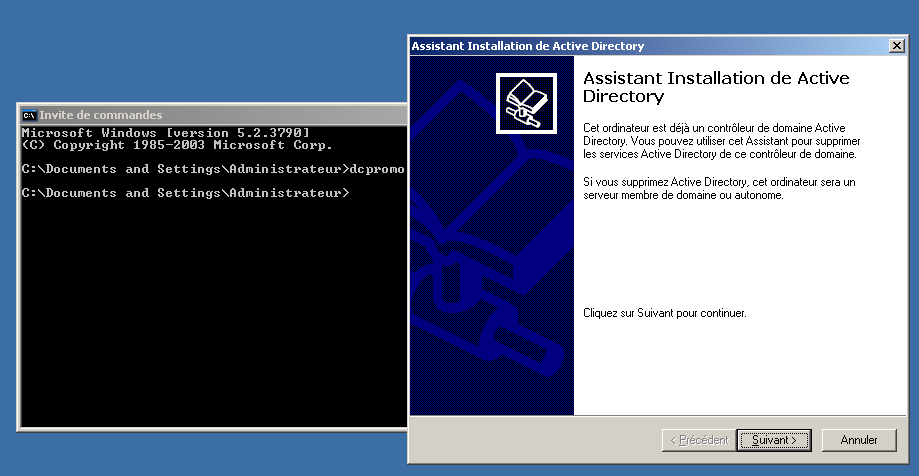
Cela va alors vous ouvrir l'assistant d'installation de Active Directory et nous allons donc créer notre premier domaine !
Cliquez deux fois sur suivant et cliquez sur "pour un nouveau domaine" :
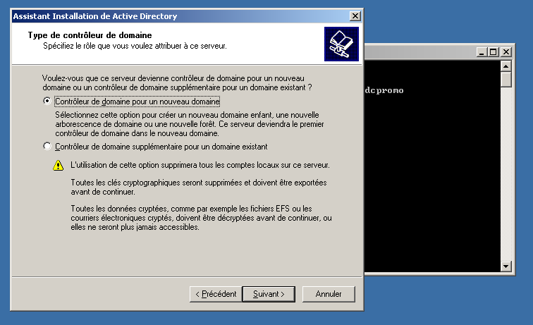
Cliquez sur "Domaine pour une nouvelle fôret" puis sur suivant
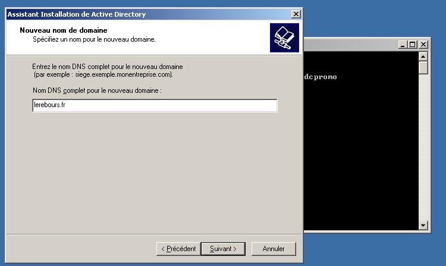
Vous allez créer le nom DNS du domaine en mettant "lerebours.fr" :
Vous allez laisser le nom NetBIOS "LEREBOURS" et vous cliquez sur suivant :
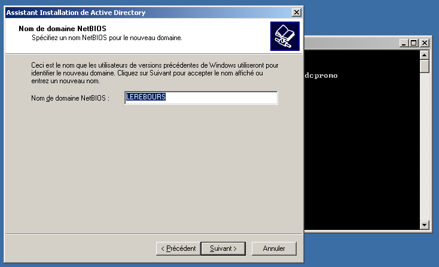
Ensuite cliquez sur suivant puis suivant pour arriver ici :
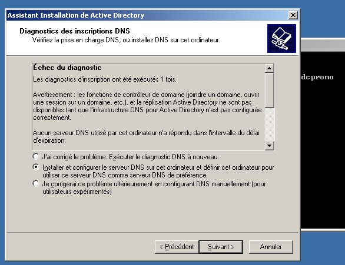
Rester sur "Installer et configurer le serveur DNS" puis cliquez sur suivant ensuite laisser l'option du bas et suivant encore :
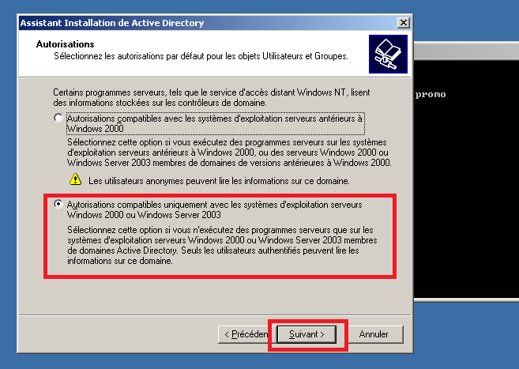
Vous allez saisir le mdp "Cmsi2026!" puis suivant :
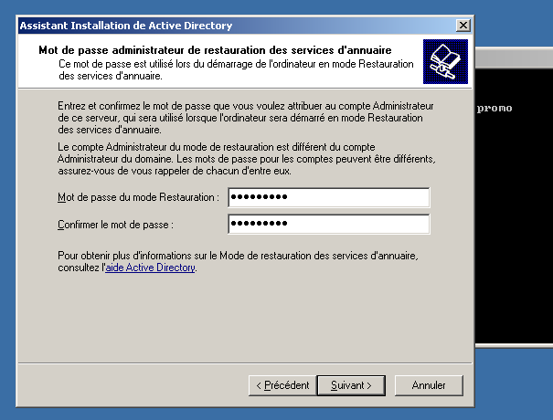
Ensuite sur la page de résumé cliquez sur suivant et le domaine va se créer :
Après cela cliquez sur "terminer" :
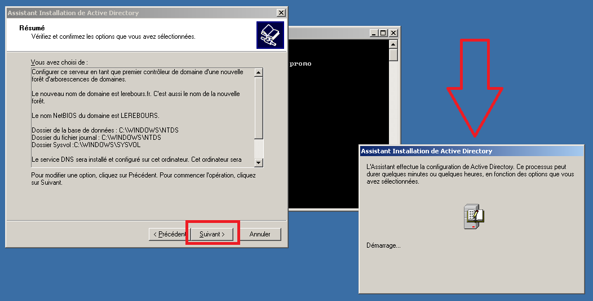
Il vous proposera alors de redémarrer le serveur, donc faites le !
Le redémarrage peut être long donc patienter le temps qu'il faudra !
Un gros GG a vous si vous avez réussit sans vous casser la tête !
Après avoir redémarrer connectez vous a la session :
Vérifiez bien que vous êtes sur LEREBOURS et non en local :
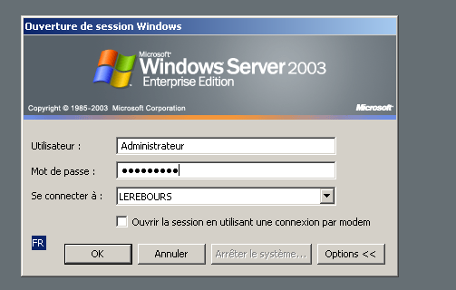
Une fois connecter, nous allons allez sur les VMs XP :
Ci-dessous le screen du serveur 2003 connecter :
Une fois sur la VM Windows XP "Client1 AD :
Faites clique droit sur le poste de travail puis sur propriété :
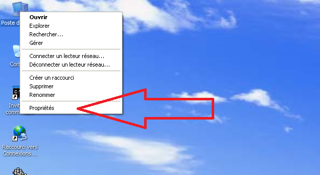
Ensuite allez dans "Nom de l'ordinateur" et cliquez sur modifier :
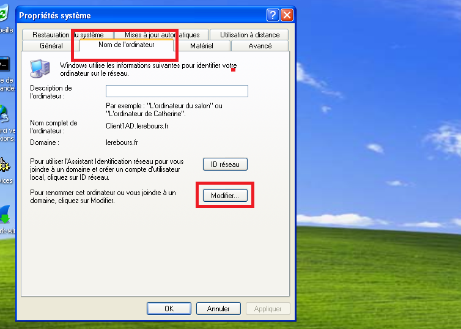
Ensuite dans la case domaine saissisez "lerebours.fr" :
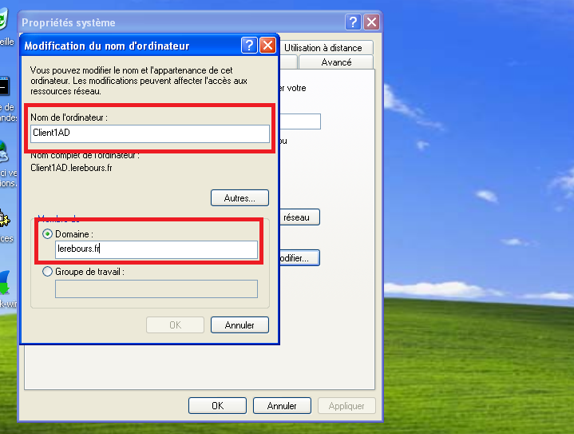
Il va vous denmander le nom et mot de passse du compte de Serveur 2003 :
Administrateur et Cmsi2026!
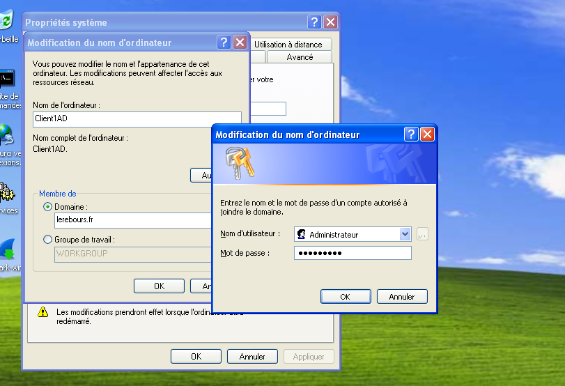
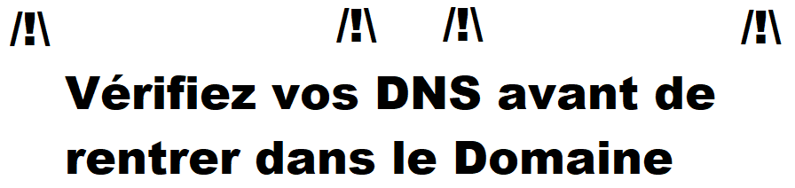
Si tout va bien, vous serrez inclus dans le domaine :
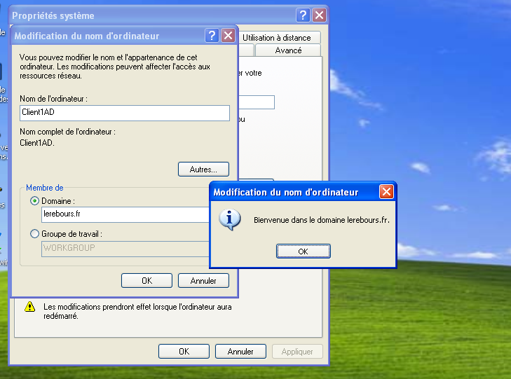
Il va alors vous proposez de redémarrer, faite le :
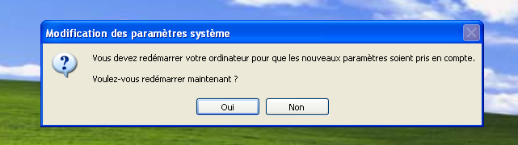
Félicitation, vous avez inclus votre domaine !
Nous allons revenir sur notre Serveur 2003 et nous allons créer les utilisateurs :
Pour se faire allez dans le menu démarrer ==> outil d'administration puis cliquez sur Utilisateurs et ordinateurs Active Directory.
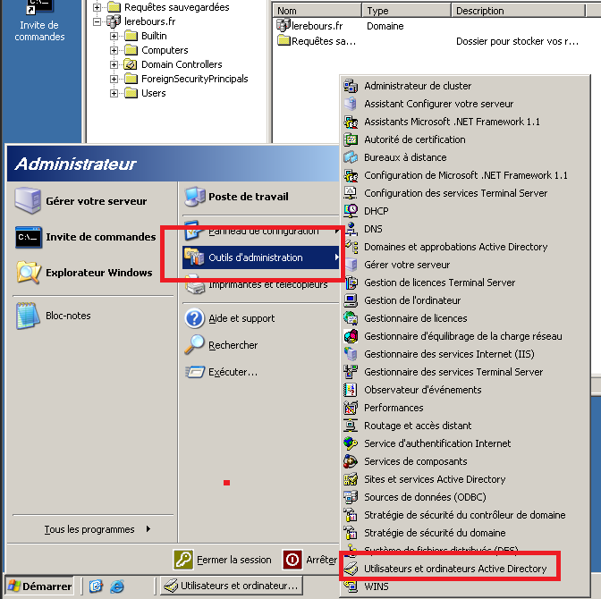
Faites un clique droit sur le domaine sélectionnez nouveau puis Unité d'Organisation :
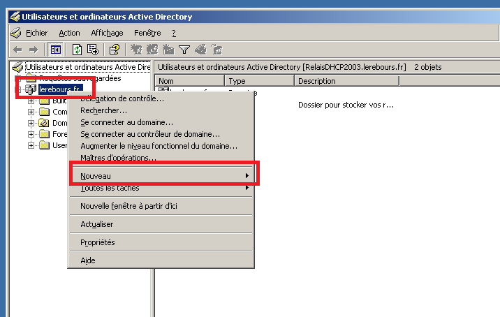
Appellez ce dossier "SISR1"
Dans ce dossier, créer un utilisateur dedans :
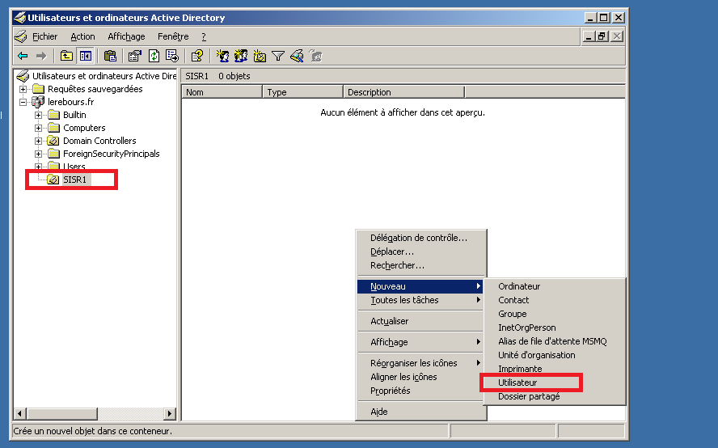
Créer l'utilisateur du nom de Bob :
Ils nous servira pour se connecter sur le poste Client1 AD !
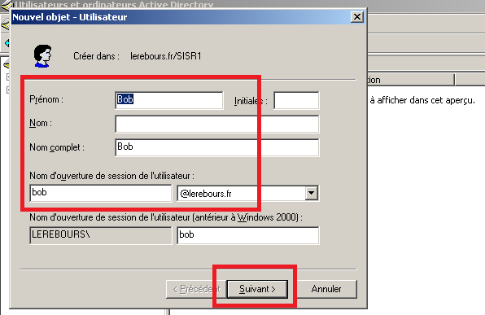
Mettez le même mot de passe : Cmsi2026!
Et cocher "le mot de passe n'expire jamais" :
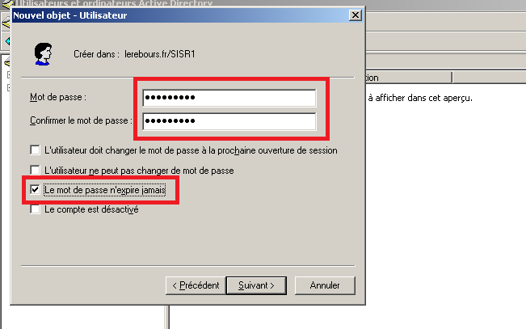
Le compte est alors créer !
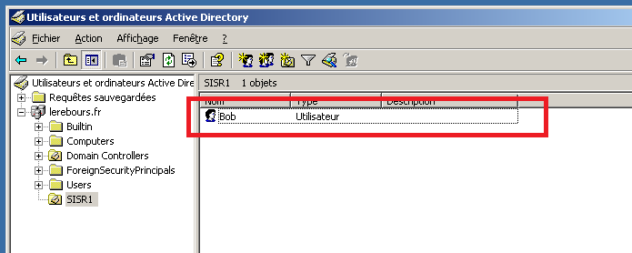
Nous allons maintenant revenir sur notre poste Client1 AD et se connecter au compte Bob !
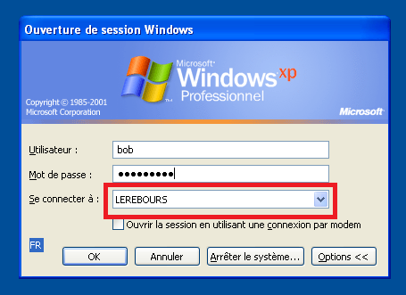
Après avoir entrer les identifiant, vous serrez connecté !
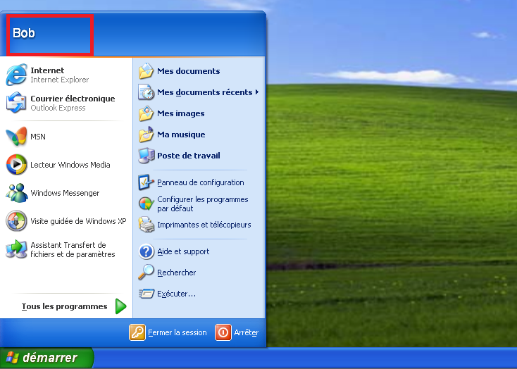
Vous avez fini cette partie la du TP, 10/10 !